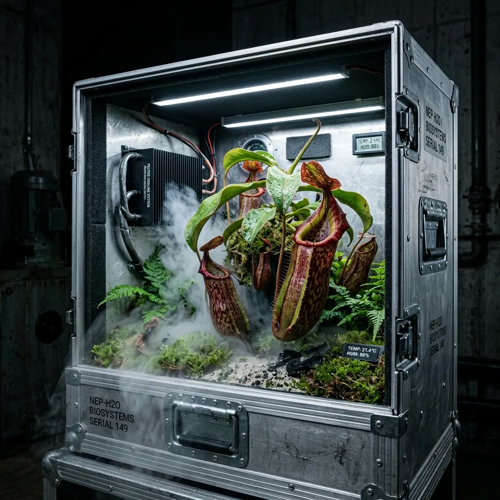

Absolute Climate Isolation for Predatory Flora.
Aerospace-grade aluminium terrarium flight cases and zero-nutrient substrates engineered for the most demanding indoor botanical environments.
Cultivating rare carnivorous plants outside of their native tropical and bog environments requires ruthless environmental control. Nepenthes Forge & Flight engineers the hardware necessary to sustain species like Venus flytraps, Sundews, and highland Pitcher plants in completely isolated micro-climates. Operating from our manufacturing hub in Pretoria, Gauteng, we construct crush-proof, actively cooled containment systems and blend heavily sterilised quartz and sphagnum substrates. We do not sell decorative glass boxes; we manufacture precision life-support infrastructure for highly sensitive flora.
The Highveld Nepenthes Transit Case
Our flagship engineering achievement is the Highveld Nepenthes Transit Case. Designed originally to transport highland Nepenthes species across the arid, altitude-shifting expanses of the South African interior, this modular unit acts as a mobile, self-sustaining biosphere. The outer shell is forged from three-millimetre anodised aluminium, secured with industrial-grade steel draw latches. Internally, a proprietary active peltier-cooling element works in tandem with a bespoke ultrasonic fogger to maintain a rigid ninety percent ambient humidity, even when external temperatures exceed thirty-five degrees Celsius. The case features a built-in reverse-osmosis water reservoir capable of sustaining the internal micro-climate for up to fourteen days entirely off-grid. Every internal seam is bonded with non-toxic, marine-grade silicone, ensuring that not a single drop of distilled moisture escapes the containment field during transit.

The Climate-Lock Sealing Process
Achieving absolute environmental isolation requires rigorous, methodical assembly. Standard terrariums fail due to imperceptible atmospheric leaks that vent critical humidity into the dry ambient room air. To counter this, we implement the Climate-Lock Sealing Process across all containment hardware:
- Gasket Application: We line every hinged structural intersection with dense, industrial-grade neoprene rubber. This material guarantees a highly resilient mechanical barrier against moisture loss, compressing down to exactly two millimetres when the steel latches engage.
- Compression Testing: Post-assembly, the unit is subjected to a four-hour positive pressure test. We inject dense, highly visible ultrasonic vapour into the chamber, over-pressurising the internal environment. Engineers meticulously inspect all welded joints and neoprene seals under ultraviolet inspection lamps to identify and correct any micro-leaks.
- Final Purge: Once structural integrity is confirmed, we perform a total atmospheric flush. The unit is purged entirely using purified, distilled vapour to neutralise static particulates before being packed into its shipping crate.
This process guarantees that a ninety-five percent relative humidity setpoint remains constant, mitigating catastrophic transpiration shock for fragile botanical specimens.
View Containment HardwareField Reports from the Conservatory
Our hardware acts as the final line of defence against hostile external climates. We engineer solutions for institutions and individuals who operate at the limits of botanical capability.
- Dr. Elias Venter, Lead Botanist: "Securing the survival of our Heliamphora minor collection during the cross-country relocation was a logistical nightmare. The Highveld Transit Case maintained an internal temperature delta of twelve degrees Celsius below the ambient cabin heat. The specimens arrived with zero signs of thermal stress."
- Sarah Jenkins, Private Conservatory Collector: "Rolling blackouts used to mean certain death for my highland Nepenthes due to rapid humidity collapse. Your integrated battery-backup cooling systems sustained my collection through an unexpected forty-eight-hour power grid failure in mid-January. The peliter coolers ran flawlessly off the auxiliary cells."
- Marcus Theron, Commercial Propagator: "Transitioning entirely to your sterile silica and sphagnum substrates eradicated the root rot epidemic tearing through our Drosera flats. The absolute chemical sterility of the foundation material provides an incredibly stable, predictable growth medium."
Forged in the Dry Highveld
The concept for Nepenthes Forge & Flight was born out of stark necessity. Pretoria sits at an altitude of one thousand, three hundred and thirty-nine metres above sea level, characterised by intensely dry, aggressive heat waves and critically low atmospheric humidity throughout the winter months. Attempting to cultivate ultra-sensitive bog flora in this environment using standard, porous horticultural equipment proved consistently fatal.
The turning point arrived when our founder, a structural engineer and obsessive collector of rare carnivorous plants, lost a decade-old Nepenthes macrophylla to an unforeseen drop in ambient moisture during a severe drought. Refusing to accept the climatic limitations of the region, the first heavily insulated, actively cooled aluminium chamber was prototyped in a residential garage. What began as a desperate measure to preserve a personal botanical archive evolved into a robust manufacturing operation. We now design, test, and ship industrial-grade biosphere units globally, actively defying the constraints of local geography.
Our Engineering Philosophy